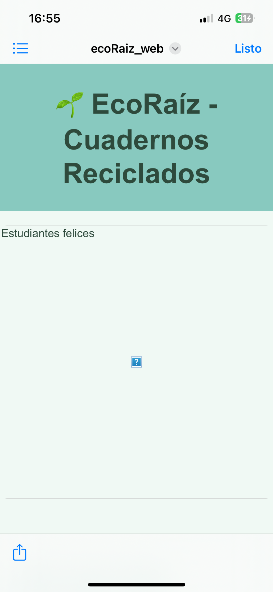
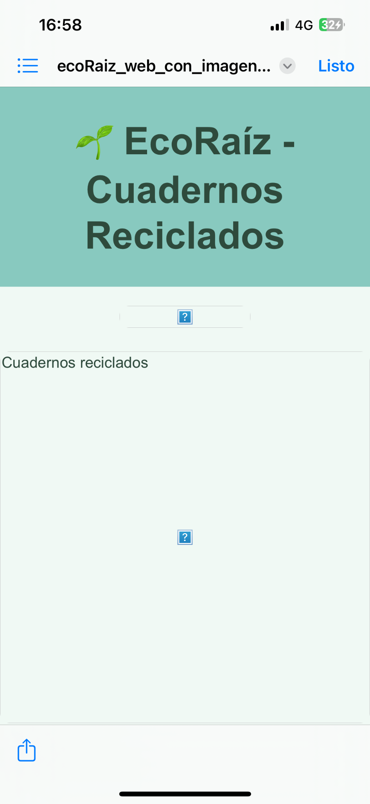

🌱 EcoRaíz - Cuadernos Reciclados


¿Por qué nace EcoRaíz?
Facilitamos el acceso a materiales escolares sostenibles, reduciendo el impacto ecológico y promoviendo una economía circular. Damos nueva vida al papel descartado.
¿Qué ofrecemos?
Cuadernos ecológicos hechos con papel reciclado recolectado de oficinas, con portadas educativas sobre los ODS. Ayudan al planeta y educan al mismo tiempo.
¿Por qué elegirnos?
- 🌍 Sostenibilidad real: reutilizamos papel descartado.
- 📘 Conciencia social y ambiental: educamos sobre los ODS.
- 🎓 Impacto educativo: promovemos una educación equitativa.
Misión
Promover una educación de calidad y sostenible mediante cuadernos ecológicos que contribuyan a la conciencia ambiental.
Visión
Inspirar a docentes y estudiantes a adoptar prácticas responsables con el medio ambiente.
Valores
- 🌱 Sostenibilidad
- 📚 Calidad educativa
- 💚 Responsabilidad social
- 💡 Innovación
- 🌍 Conciencia ambiental
Organigrama del Proyecto
- Dirección General: Planificación y alianzas.
- Producción y Reciclaje: Recolección, reciclado, ensamblaje.
- Diseño y Contenido: Desarrollo de portadas y contenido educativo.
- Educación y Sensibilización: Talleres y capacitaciones.
- Ventas y Distribución: Comercialización y entrega.
- Marketing: Redes sociales y campañas de impacto.
Educamos sembrando el futuro 🌱
Cada hoja reciclada es una semilla de cambio.